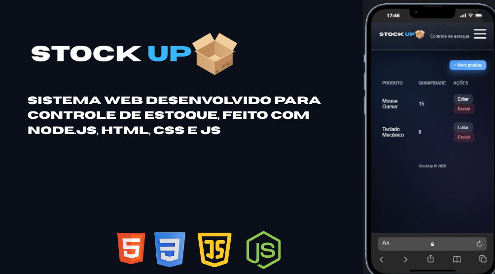

Projetos em Destaque


...
Transformo ideias em aplicações escaláveis e performáticas.
Desenvolvedor Fullstack & Mobile, focado em construir aplicações com visual moderno, código organizado e integração com banco de dados e serviços (Firebase / MySQL).
Análise e Desenvolvimento de Sistemas (ADS) — em andamento.
Conquistar uma vaga Júnior e crescer com base sólida (sem atropelar etapas).
Projetos com Firebase, Node.js + MySQL, UI dark moderna e deploy online.
HTML, CSS e JavaScript com foco em UI moderna, responsiva e micro-interações. Também uso Electron.js para apps desktop.
Node.js + MySQL para APIs REST, CRUD, validações e integrações — com organização e atenção à escalabilidade.
Flutter com Firebase (Auth/Firestore) para apps com dados dinâmicos, performance e boa experiência de uso.
Versionamento com commits limpos, branches, merges e organização do repositório para colaboração e deploy contínuo.
Estou aberto a oportunidades, freelas e novas conexões.